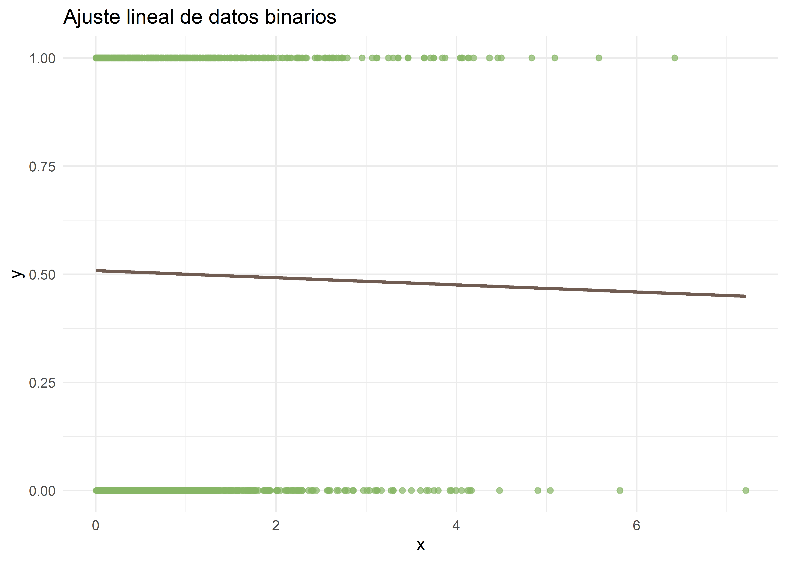
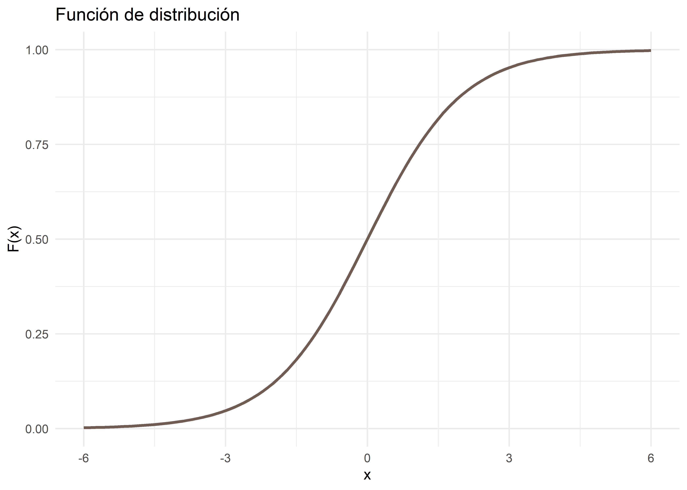
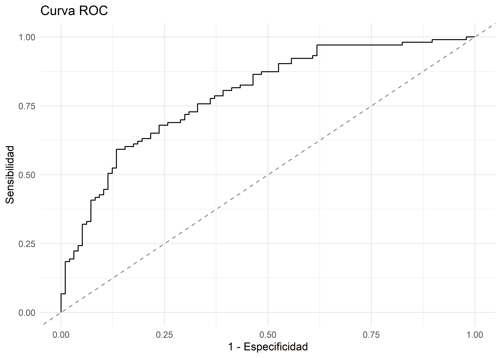

Regresión logística
© 2025 Instituto Nacional de Epidemiología “Dr. Juan H. Jara” (ANLIS) - CC BY-NC 4.0


Introducción
Cuando la variable dependiente es dicotómica o binaria, es decir, tiene dos categorías mutuamente excluyentes (éxito/fracaso; sí/no; positivo/negativo, etc.), los modelos de regresión lineal no son el abordaje más adecuado para el análisis. Consideremos un evento de salud que puede ocurrir o no (variable dependiente). Por ejemplo:
Un paciente hospitalizado muere/no muere antes del alta.
Un niño nace con/sin una malformación congénita.
Un sujeto operado se infecta/no se infecta en el postoperatorio.
Un niño camina/no camina a los 11 meses.
Una droga mejora/no mejora los síntomas depresivos.
Teniendo en cuenta que nuestra variable respuesta es dicotómica:
\[ Y = 1 \rightarrow Si~el~hecho~ocurre \\ Y = 0 \rightarrow Si~el~hecho~no~ocurre \]
Si representáramos los datos con una función lineal, obtendríamos el siguiente gráfico:
Matemáticamente, la función exponencial representa mejor esta relación:

La regresión logística se utiliza en los casos en que la variable dependiente es binaria, mientras que las variables independientes pueden ser de cualquier tipo (categóricas, dicotómicas, numéricas discretas o continuas). En vez de la ecuación de la recta, ahora tenemos otra ecuación que expresa la variable respuesta (\(Y\)) en función de la/las variables independientes. Esta ecuación, en realidad, expresa la probabilidad de que ocurra un hecho en función de ciertas variables que se presumen relevantes.
La expresión analítica es:
\[ P(Y=1)_x=\frac{1}{1+e^{(-\alpha-\beta_1X_1-\beta_2X_2-\dots-\beta_kX_k)}} \]
Para comprender lo que significan los coeficientes \(\beta\) del modelo, vamos a hacer algunas operaciones matemáticas. Comenzaremos por realizar una transformación logística, es decir, dividir ambos miembros de la ecuación por \(1-P_{(Y=1)}\):
\[ \frac{P(Y=1)_x}{1-P(Y=1)_x}=\frac{\frac{1}{1+e^{(-\alpha-\beta_1X_1-\beta_2X_2-\dots-\beta_kX_k)}}}{1-\frac{1}{1+e^{(-\alpha-\beta_1X_1-\beta_2X_2-\dots-\beta_kX_k)}} } \]
Si ahora aplicamos logaritmo natural (\(ln\)) a ambos miembros de la ecuación, y aplicamos propiedades de los logaritmos, nos queda:
\[ ln\bigg[\frac{P_x}{1-P_x}\bigg] = \alpha + \sum\beta_ix_i \]
Si observamos el término que está entre corchetes, recordaremos que el cociente entre la probabilidad que un suceso ocurra, y la probabilidad de que no ocurra, es lo que conocemos como Odds, entonces:
\[ ln(Odds) = \alpha+\sum\beta_ix_i \]
Si despejamos Odds de la ecuación anterior, podemos concluir entonces que:
\[ Odds = e^{(\alpha+\sum\beta_ix_i)} \]
Para comprender mejor cómo se interpretarán los coeficientes en la regresión logística, supongamos que queremos modelar la probabilidad de que un evento ocurra, \(P_{(Y=1)}\), en función de una única variable independiente dicotómica, que toma el valor 0 cuando la condición está ausente (\(x=0\)) y el valor 1 cuando está presente (\(x=1\)). Entonces:
Para \(x=1\)
\[ Odds_{evento/expuestos}=e^{(\alpha+\beta)} \]
Para \(x=0\)
\[ Odds_{evento/expuestos}=e^{(\alpha)} \]
Entonces, si queremos calcular el odds-ratio (OR):
\[ OR = \frac{e^{(\alpha+\beta)}}{e^\alpha}=e^\beta \]
Por lo tanto:
\[ ln\; OR = \beta \]
De esta forma, vemos que \(\beta\) = incremento del logaritmo del OR por cada unidad de incremento de \(x\).
Extendiendo el razonamiento para la regresión logística múltiple, es decir cuando modelamos en función de más de una variable independiente, volvemos a la ecuación:
\[ ln(Odds) = \alpha + \sum\beta_ix_i \]
Donde cada \(\beta_i\): Incremento en log-odds para una unidad de incremento en \(x_i\) con todas las otras \(x_i\) constantes.
Incluimos esta deducción para facilitar la comprensión del tema, pero para quienes el lenguaje matemático les es adverso, pueden hacer un “acto de fe” y quedarse con las conclusiones.
Modelos lineales generalizados
La regresión logística forma parte de la familia de modelos lineales generalizados (GLM por su nombre en inglés, Generalized Linear Models), utilizados para predecir la probabilidad de que ocurra un evento binario (como infectado/no infectado, enfermo/no enfermo, sobreviviente/fallecido, etc.) en función de una o más variables independientes. Los GLM extienden los modelos de regresión lineales al permitir el uso de distribuciones no normales de errores (como binomiales, Poisson, gamma, entre otras) y varianzas no constantes. Estos modelos se caracterizan por una estructura de errores específica y una función de enlace que conecta la variable respuesta con la(s) variable(s) independiente(s).
En el caso de la regresión logística, donde la variable respuesta es binaria (0, 1), la estructura de errores pertenece a la familia de distribución binomial. La función de enlace típica para linealizar la relación entre la variable respuesta y la(s) variable(s) independiente(s) es la función logit, que es el logaritmo natural del odds-ratio (OR). Esta función de enlace transforma la escala de probabilidades (de 0 a 1) a una escala lineal (de \(-\infty\) a \(+\infty\)), lo que facilita la modelización de la relación entre las variables independientes y la variable respuesta binaria.
Componentes del modelo logístico
Al igual que en la regresión lineal múltiple (RLM), antes de adentrarnos en el modelado, exploraremos cómo interpretar la salida de R para un modelo de regresión logística obtenida a partir de la función summary(modelo):
Call:
glm(formula = y ~ x1 + x2, family = binomial, data = datos)
Coefficients:
Estimate Std. Error z value Pr(>|z|)
(Intercept) -0.3362 0.2816 -1.194 0.2325
x1B 0.4267 0.4012 1.064 0.2875
x1C 0.7016 0.3996 1.756 0.0791 .
x2 1.2669 0.2103 6.023 1.71e-09 ***
---
Signif. codes: 0 '***' 0.001 '**' 0.01 '*' 0.05 '.' 0.1 ' ' 1
(Dispersion parameter for binomial family taken to be 1)
Null deviance: 277.08 on 199 degrees of freedom
Residual deviance: 221.48 on 196 degrees of freedom
AIC: 229.48
Number of Fisher Scoring iterations: 4Los elementos a tener en cuenta son:
Call: Muestra la fórmula del modelo utilizado.
Estimate: Contiene los coeficientes \(\beta\) estimados, incluyendo el intercepto (\(\beta_0\)) y las variables explicativas (\(\beta_i\)). Al aplicar a estos coeficientes la función
exp(), que representa la función inversa del logaritmo natural, se obtiene el Odds Ratio (OR). Esto implica que los coeficientes de las variables independientes se interpretan como el OR de que ocurra el evento para cada incremento de la variable independiente, manteniendo constantes las demás variables independientes.Std. Error: Representa el error estándar asociado a cada coeficiente.
z value: Corresponde al estadístico del test de Wald para evaluar la significancia de cada coeficiente.
Pr(>|z|): Proporciona los p-valores asociados al test de Wald, que indican si los coeficientes son significativamente diferentes de cero.
Además, en la parte final de la salida se presentan:
Null deviance: La devianza del modelo nulo, que asume que ninguna de las variables explicativas tiene efecto.
Residual deviance: La devianza del modelo ajustado, que indica cuánto se reduce la devianza al incluir las variables explicativas.
AIC (Criterio de Información de Akaike): Una medida de la calidad del modelo, penalizando por la complejidad para favorecer modelos más parsimoniosos.
Number of Fisher Scoring iterations: Número de iteraciones realizadas durante el proceso de estimación de parámetros del modelo.
A continuación, profundizaremos en el significado de algunos de estos conceptos.
Test de Wald
El test de Wald se utiliza para evaluar la significación de una variable dentro del modelo. De manera similar al test \(F\) parcial en la regresión lineal múltiple, este test contrasta la hipótesis nula:
\[ H_0 : \beta_i = 0 \]
Expresamos la prueba en términos del coeficiente \(\beta_i\) porque esta formulación es análoga a la utilizada en regresión lineal. Sin embargo, en regresión logística, los resultados suelen presentarse en términos de odds-ratio (OR).
Dado que una pendiente \(\beta_i = 0\) implica un OR de 1, la hipótesis nula también puede expresarse como “la razón de probabilidades es 1”. Esto significa que la variable explicativa no tiene capacidad predictiva, ya que las probabilidades de los grupos comparados son iguales.
La interpretación sigue criterios comunes en inferencia estadística: valores de p menores a 0,05 sugieren evidencia suficiente para rechazar la hipótesis nula, indicando que la variable contribuye significativamente al modelo (p < 0,1 podría considerarse en contextos más flexibles). Es fundamental recordar que, en regresión logística, los coeficientes \(\beta_i\) no se interpretan directamente. Para obtener su efecto sobre la razón de probabilidades, se debe calcular su exponencial \(\exp(\beta_i)\).
Máxima verosimilitud
Mientras que en la regresión lineal múltiple (RLM) los coeficientes \(\beta\) se obtenían por el método de los mínimos cuadrados, en la regresión logística (RLOG) se obtienen mediante el método de máxima verosimilitud (ML, por su nombre en inglés, Maximum Likelihood). El fundamento de esta técnica radica en utilizar la información disponible de los datos de la muestra para seleccionar el valor del parámetro que maximiza la probabilidad de observar los resultados muestrales. La ML, entonces, se calcula mediante un proceso iterativo.
Por lo tanto, una medida adecuada para evaluar la concordancia del modelo con los datos sería el producto de todas las probabilidades (predichas por el modelo), que los \(n\) sujetos de la muestra realmente tengan la condición observada. Es decir, un buen modelo sería el que asigne una probabilidad de 1 (\(p = 1\)) a cada sujeto que realmente tenga la condición y de 0 (\(p = 0\)) a cada sujeto libre de ella, correspondiendo a una ML de 1. Por el contrario, un modelo deficiente tendría una verosimilitud cercana a 0. En consecuencia, la proximidad de la verosimilitud a 1 expresa cuán eficiente ha sido el ajuste realizado para modelar la realidad.
Deviance
La deviance (\(D\)), también conocida como devianza o distancia, se define como:
\[ D = -2lnV \]
Donde \(V\) es la verosimilitud del modelo.
Dado que, como explicamos anteriormente, \(V < 1\), su logaritmo siempre será negativo, haciendo que la devianza sea siempre un número positivo. El grado de ajuste de un modelo será mejor cuanto más próxima a 1 es la verosimilitud y, en consecuencia, cuanto más cercana a cero sea la devianza.
Al ajustar el modelo se calculan dos devianzas: la correspondiente al “modelo nulo” (\(D_0\)), que es aquel en que no se ha incorporado ninguna variable independiente, y la \(D_f\) del modelo. La diferencia (o cociente) entre estas dos devianzas mide la “contribución” que hacen las variables incorporadas al modelo:
\[ -2lnV_0 - (-2lnV_f) \]
La \(D_0\) es siempre mayor que la de cualquier modelo ampliado. Esto es razonable, ya que el modelo nulo es mucho menos complejo (no incorpora información de variables “explicativas”) y, por lo tanto, tendrá una capacidad predictiva inferior.
Likelihood Ratio Test
El Likelihood Ratio Test (LRT) compara la probabilidad de los datos observados bajo dos modelos: uno que incluye los predictores y otro que no. Para ello, evalúa la diferencia en los residuos entre ambos modelos, lo que equivale a comparar sus respectivas devianzas (\(D\)).
\[ D_0 - D = -2lnV_0 + 2lnV = -2ln(V_0-V) = -2ln\bigg(\frac{V_0}{V}\bigg) \]
Donde \(\frac{V_0}{V}\) es el Likelihood Ratio o razón de verosimilitud.
El LRT permite evaluar la significancia de la incorporación de predictores al modelo, comparándolo con el modelo nulo (sin predictores).El estadístico de prueba sigue una distribución \(\chi^2\) con grados de libertad equivalentes al número de predictores incluidos en el modelo.
En términos prácticos, la razón de verosimilitud se obtiene al comparar las devianzas de dos modelos, uno con más y otro con menos predictores. Esto permite determinar si la inclusión de ciertas variables mejora significativamente el ajuste del modelo. En la salida de un modelo, los valores de devianza aparecen bajo los títulos Null deviance (para el modelo nulo) y Residual deviance (para el modelo con predictores).
Criterio de Información de Akaike
El Criterio de Información de Akaike (AIC) es una medida de la calidad relativa de un modelo estadístico, para un conjunto dado de datos. Se define como:
\[ AIC= 2k – 2ln(D) \]
Donde,
\(k\): número de parámetros del modelo.
\(D\): devianza del modelo.
El AIC proporciona un método para la selección de modelos, donde valores menores de AIC indican un mejor ajuste del modelo a los datos.
Para comparar dos o más modelos de regresión logística, se pueden utilizar las siguientes técnicas:
AIC: El primer término de la ecuación del AIC penaliza por la inclusión de variables en el model (\(2k\)), mientras que el segundo compensa por la bondad de ajuste (\(2ln(D)\)). Por lo tanto, dado un conjunto de modelos para los datos, el modelo preferido es aquel con el valor mínimo de AIC.
En R, realizamos la comparación con la función
AIC():# Genero modelo más sencillo mod2 <- update(modelo, ~.-x1) # Comparo AIC AIC(modelo, mod2)df AIC modelo 4 229.4788 mod2 2 228.6598Likelihood Ratio Test: Este test permite comparar dos modelos evaluando la significancia de la diferencia de devianzas. El estadístico tiene una distribución \(\chi^2\) con grados de libertad iguales a la diferencia en el número de parámetros entre los dos modelos comparados.
La función
anova()del paquetestatspermite comparar modelos por si diferencia de varianzas:anova(modelo, mod2, test = "Chisq")Analysis of Deviance Table Model 1: y ~ x1 + x2 Model 2: y ~ x2 Resid. Df Resid. Dev Df Deviance Pr(>Chi) 1 196 221.48 2 198 224.66 -2 -3.1811 0.2038También podemos usar la función
test_lrt()del paqueteperformance:test_lrt(modelo, mod2)# Likelihood-Ratio-Test (LRT) for Model Comparison (ML-estimator) Name | Model | df | df_diff | Chi2 | p -------------------------------------------- modelo | glm | 4 | | | mod2 | glm | 2 | -2 | 3.18 | 0.204
Bondad de ajuste
De forma análoga al Coeficiente de Determinación (\(R^2\)) utilizado en regresión Lineal, se han desarrollado diversos coeficientes para estimar la proporción de variabilidad explicada por las variables independientes en modelos de regresión logística.
En R, podemos calcular estos coeficientes utilizando el paquete performance:
Coeficiente de McFadden: Es una de las medidas más utilizadas y se interpreta de manera similar al \(R^2\) en regresión lineal:
r2_mcfadden(modelo)# R2 for Generalized Linear Regression R2: 0.201 adj. R2: 0.193Coeficiente de Cox y Snell: Se basa en la razón de verosimilitud y es una generalización del \(R^2\) en modelos lineales:
r2_coxsnell(modelo)Cox & Snell's R2 0.2427035Coeficiente de Nagelkerke: El coeficiente de Nagelkerke es una versión corregida del coeficiente de Cox y Snell, cuyo valor máximo es menor a 1 incluso para un modelo perfecto, corrigiendo así la tendencia de subestimación del coeficiente \(R^2\).
r2_nagelkerke(modelo)Nagelkerke's R2 0.3237019Coeficiente de Tjur: Calcula el Coeficiente de Discriminación (\(D\)) para modelos lineales generalizados con variable respuesta binaria. Es el proporcionado por defecto para modelos de regresión logística en
performance:r2(modelo)# R2 for Logistic Regression Tjur's R2: 0.251Test de Hosmer-Lemeshow: Ninguno de los coeficientes anteriores mide directamente la calidad del ajuste del modelo. Para evaluar esto, utilizamos el test de Hosmer-Lemeshow, que compara las probabilidades predichas con las observadas.
Este test calcula un estadístico de distribución \(\chi^2\) con \(n-2\) grados de libertad, utilizando varios grupos basados en los deciles de las probabilidades predichas. En R:
performance_hosmer(modelo)# Hosmer-Lemeshow Goodness-of-Fit Test Chi-squared: 12.091 df: 8 p-value: 0.147En un test de bondad de ajuste, la hipótesis nula siempre afirma que el modelo propuesto se ajusta bien a los datos observados. Por lo tanto, un p-valor superior a 0.05 implica que lo observado se ajusta suficientemente bien a lo esperado bajo el modelo.
Capacidad predictiva del modelo
Otro aspecto a evaluar en un modelo de RLOG es su capacidad de discriminación, es decir, la habilidad del modelo para distinguir entre individuos en los que ocurre el evento y aquellos en los que no. Una medida común de esta discriminación es el área bajo la curva ROC (Receiver Operating Characteristic), que se construye utilizando las probabilidades predichas por el modelo.
Para evaluar la efectividad del modelo en la clasificación de observaciones, se puede construir una tabla de clasificación que cruza el verdadero valor de la observación (1 o 0) con la predicción del modelo. Como el modelo de RLOG estimará probabilidades en el rango de 0 a 1, tendremos que elegir un punto de corte en forma arbitraria. Por ejemplo, podríamos decidir que probabilidades estimadas mayores a 0.5 sean indicativas de que el evento ha ocurrido, mientras que probabilidades menores o iguales a 0.5 indiquen que el evento no ha ocurrido.
La capacidad predictiva de un modelo de regresión logística se resume utilizando los conceptos de sensibilidad y especificidad. Quienes trabajen en áreas relacionadas al diagnóstico estarán más familiarizados con estos conceptos.
Sensibilidad: Probabilidad de que el modelo prediga correctamente que el evento ha ocurrido cuando realmente ha ocurrido.
\[ P(\hat{y} = 1|y = 1) \]
Especificidad: Probabilidad de que el modelo prediga correctamente que el evento no ha ocurrido cuando realmente no ha ocurrido.
\[ P(\hat{y}=0|y=0) \]
La curva ROC es un gráfico que representa la sensibilidad en función de 1 menos la especificidad. Si vamos modificando los valores del valor de corte y representamos la sensibilidad (en el eje Y) frente a 1 – especificidad (en el eje X) tenemos la curva ROC. Cuanto mayor sea el área bajo esta curva, mejores serán las predicciones del modelo.

Esta curva representa, para todos los pares posibles de individuos formados por uno en el que ocurrió el evento y otro en el que no, la proporción de aquellos para los cuales el modelo predice una mayor probabilidad de haber experimentado el evento.
Para evaluar un modelo de RLOG deberíamos observar:
- Coeficientes de determinación : Variabilidad explicada por el modelo.
- Test de Hosmer‐Lemeshow: Bondad de ajuste, diferencia entre los valores predichos por el modelo y los valores observados en la muestra.
- AIC, LRT o ANOVA: Comparación de modelos.
- Curva ROC: Capacidad predictiva (especialmente cuando el propósito es predictivo).
- Intervalos de confianza: Exactitud del coeficiente.
Construcción del modelo en R
El ajuste de un modelo de regresión logística en R se realiza utilizando la función glm(), del paquete stats:
glm(formula, family = binomial(link = "logit"), data)- Formula: Especifica la relación entre la variable dependiente y las variables independientes en el modelo. Sigue la estructura estándar:
\[ variable\_dependiente \sim variable\_indep_1 + variable\_indep_2 +\dots+ variable\_indep_n \]
Family: Se refiere a la familia de distribuciones y la función de enlace utilizada para ajustar el modelo. Las opciones comunes incluyen:
gaussian(): Utilizada para variables dependientes continuas con distribución normal. El enlace predeterminado esidentity, lo cual es análogo a ajustar un modelo de RLM. Puede emplear también enlaceslog, einverse.binomial(): Utilizada para variables dependientes binarias (0, 1). El enlace predeterminado eslogit, que es el más común en la regresión logística. También admite enlaces comoprobit,cauchit,log, ycloglog.poisson(): Usada para variables dependientes numéricas discretas. El enlace predeterminado es el logaritmo (log), y también admiteidentityysqrt.Otras familias como
Gamma(),inverse.gaussian(),quasi(),quasipoisson(), yquasibinomial()para diferentes distribuciones de errores que no abordaremos en el curso.
Si la función de enlace no se especifica, se utiliza el enlace canónico (predeterminado) para cada familia. Por ejemplo, si omitimos el argumento
link = "logit", de todas maneras quedaría definido ese mismo enlace para la familiabinomial.Data: Nombre del dataframe que contiene las variables utilizadas en el modelo.
Gestión de variables dicotómicas
Decíamos que el modelo con enlace logit es un modelo de regresión típico:
\[ Y = f(X + E) \]
donde la variable respuesta (variable aleatoria \(Y\)) es dicotómica o binaria (toma dos valores: 0 y 1), habitualmente sobre si nuestra unidad de análisis tiene una característica (1) o no la tiene (0).
Nuestras variables dicotómicas pueden tener originalmente formatos variados y sus categorías también pueden definirse con etiquetas diferentes. Por ejemplo, podemos tener variables dicotómicas con formato lógico (+/-, TRUE/FALSE), con formato caracter (Si/No, Vivo/Muerto, etc.) o con formato numérico codificado (0-1, 1-2 o cualquier combinación personalizada de códigos).
En R las variables categóricas que utilizamos como dependientes en estos modelos corresponden convenientemente al tipo de datos factor. Recordemos que un factor es, interna y técnicamente, una variable numérica compuesta de enteros sucesivos a partir de 1. Cada entero es un nivel o categoría de la variable y está acompañado de una etiqueta que nos facilita recordar a qué categoría corresponde.
Los modelos binomiales asumen las variables dicotómicas codificándolas como 0 y 1, lo cuál podría ser problemático si, como numéricos, los factores comienzan con 1. Como la estructura de los factores es conocida por las funciones que estiman modelos logit, estas funciones convierten internamente la variable categórica/factor en una variable codificada como 0/1, sin que el usuario tenga que hacer nada.
Por lo tanto, no es necesario recodificar la variable o convertirla en dummy, esto se procesa de manera transparente para el usuario. Lo único que debemos asegurarnos es que la variable sea factor y que el nivel de referencia sea la ausencia de la característica (por ejemplo, enfermedad = No).
Debemos usar la función levels() de R base para consultar los niveles o categorías de un factor e identificar el primer nivel del factor, que será el nivel de referencia en el modelo, es decir, \(Y=0\).
Podemos modificar estos niveles de referencia mediante la función relevel() de R base o con fct_rev() de tidyverse, cuando estos se encuentren invertidos.
# Factor con dos categorías
factor <- factor(c("1", "0", "1", "1", "0"))
# Cambio nivel de referencia en R base
relevel(factor, ref = "1")[1] 1 0 1 1 0
Levels: 1 0# Cambio nivel de referencia en tidyverse
fct_rev(factor)[1] 1 0 1 1 0
Levels: 1 0Este procesamiento es extensivo a las variables categóricas (dicotómica o politómicas) que se incluyen en los modelos de regresión como explicativas. En tidyverse, podemos cambiar los niveles de referencia de un factor con más de dos categorías con la función fct_relevel().
# Factor con más de dos categorías
factor <- factor(c("CONF", "DESC", "SOSP", "CONF", "DESC", "PROB"))
# Niveles por defecto
levels(factor)[1] "CONF" "DESC" "PROB" "SOSP"# Pongo DESC como nivel de referencia
fct_relevel(factor, "DESC", after = 0)[1] CONF DESC SOSP CONF DESC PROB
Levels: DESC CONF PROB SOSPAjuste del modelo
La razón de verosimilitud en un modelo de regresión puede calcularse restando la devianza del modelo con predictores de la del modelo nulo:
modelo$null.deviance - modelo$deviance[1] 55.60009En este cálculo, estamos comparando la null deviance (modelo sin predictores) con la residual deviance (modelo con predictores). Alternativamente, la función anova() proporciona una tabla detallada que desglosa la contribución de cada variable al modelo junto con sus respectivas devianzas.
anova(modelo)Analysis of Deviance Table
Model: binomial, link: logit
Response: y
Terms added sequentially (first to last)
Df Deviance Resid. Df Resid. Dev Pr(>Chi)
NULL 199 277.08
x1 2 4.080 197 273.00 0.1301
x2 1 51.521 196 221.48 7.085e-13 ***
---
Signif. codes: 0 '***' 0.001 '**' 0.01 '*' 0.05 '.' 0.1 ' ' 1En un modelo con múltiples predictores, no todas las variables necesariamente aportan información relevante. Identificar y excluir aquellas con menor impacto puede simplificar el modelo sin comprometer su capacidad predictiva. Es fundamental definir qué se entiende por “variable relevante”, ya que la importancia de una variable no debe evaluarse únicamente desde el punto de vista estadístico. El marco conceptual es clave en la selección de predictores, especialmente cuando el objetivo del modelo es analítico. La decisión debe basarse tanto en el conocimiento del área de estudio como en la evidencia estadística.
Un error común es suponer que los métodos estadísticos pueden sustituir el conocimiento sustantivo del problema. El abuso de modelos de regresión sin una adecuada justificación teórica puede llevar a asociaciones espurias o a resultados estadísticamente significativos pero clínicamente, biológicamente o socialmente irrelevantes.
Existen diversos métodos estadísticos para la selección de variables en regresión logística. Estos buscan lograr un modelo parsimonioso que se ajuste bien a los datos sin incluir predictores innecesarios. Si bien estos procedimientos son similares a los utilizados en regresión lineal múltiple, algunos criterios de selección específicos varían.